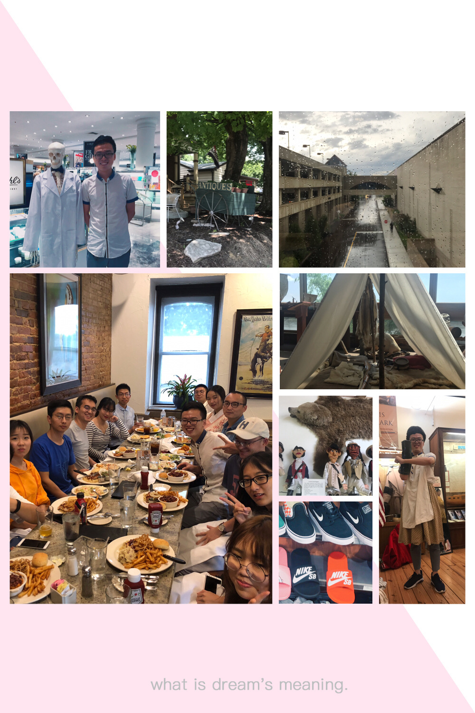

2018年于密苏里科技大学暑研感想
2018年于密苏里科技大学暑研感想
脚下坚实的土地是球形的，但徒步向前的旅人一步步走着笔直的路；指缝中划过的时间是不断流逝的，但驻足于此的行者却认为同样的时光将无限地流转。休假、旅行、访学，从某处离去，又终将归来，同样的处所、相同的人、不变的关切和思念，却又有了些不同的记忆、熟识了另一批友人、拥有了新的想法和兴趣以及微调过的思想。行走于一条莫比乌斯环，漫步一周，归来，虽情景依旧，却再也无法当初。
旅行给了人什么？如果被问及这个问题，我想无疑答案将会是一个新的自我吧。异国他乡新的文化碰撞、来自不同学校、不同地域、不同国家的人各异的性格和处事方式、崭新关系的建立、以及在此之上产生的体验和记忆，无疑都会给人渲染上一层新的颜色。
也许是托当代科技的福，在离开生活了三个月之久的小城罗拉前夜依然理所当然的认为这样的生活还会一如既往的持续下去，正如过去的三个月那样。在实验室工作、学习、写代码、做演讲；与mentor讨论问题，交流经验、分享知识；在讲台下不断修改一份份Slides；在讲台上展示最新的成果与体悟；在同学和教授家开party，跳舞、唱歌、吃自制的火锅；在周末驱车圣路易闲逛，感受博物馆诉说的历史；在罗拉的各个餐厅驻足，留下小费和欢笑；和陆鸿宇一起谈动漫、讲日语；和大家挤在一起、注视着草丛中时隐时现的敌人；飞去洛杉矶做会议的志愿者、体会美丽的海滩和有趣有料的环球影城；在center健身、游泳、挥洒汗水；在篮球和足球场上狂奔、为精彩的一刹而击掌欢呼。在罗拉和煦的阳光下，我们曾一起奋斗、一同欢笑，留下的是代码和成果，带走的是知识与美好。
仍清晰地记得初来这座小城时，同行的四个人无一人能下厨做饭，当时我们采购了大量的泡面和速冻食品，连续在罗拉的各个饭店留下足迹，而实验室对面的麦当劳更成了我们的后厨，每当没有学长学姐带去吃饭的时候就只能光顾那里，而最极端的时候甚至可以一日三入金拱门。也是自然而然的，不到一个月，胖了将近十斤。但我们也没有坐以待毙，从即将毕业的学长学姐那里“继承”了锅碗瓢盆、菜刀砧板，又从沃尔玛和圣路易的中超凑齐了各种调味料和食材，之后的时光里则拜“下厨房”APP为师，开启了我们四人的手制料理生活。我们Miner Inn的每个人都掌握了几样拿手菜，平衡了膳食后，我的体重也渐渐回到了最初的水平。
“只有尝试迈出第一步才能摆脱偏见，遇见更好的自己。”在这里的经历告诉了我这一点。之前我一直不太乐意去健身房，潜意识中觉得这是很荒谬而无聊的事情，并且目标对象是减肥的人和肌肉男。但是在周围学长和同学的带动下一步踏进健身房后，我开始意识到也许之前的想法才是真正荒谬的。对肌肉的精准锻炼、对运动强度的把控、形式多样的健身器材都使得健身成为了一项舒适而开心的事情，而来这里运动的也并非只有肥胖症患者和肌肉男。游泳也是这样，尽管只是学会了一些皮毛，但是也敢于下水游了。一直以来我都感觉很怕水，尝试了几次后最终还是放弃了，但在学长们的悉心指导下，我发现其实并不是真的不能游泳，而是内心深处始终对于呛水有着巨大的恐惧，所以无法将埋头水中，更无法游起来了。同理还有MATLAB，之前一直十分不习惯这种语言，但是真当做起来项目时，我竟开始觉得这门语言也有其方便和合理之处。当然做饭、用英语做演讲等也都是这样，一旦克服了最初的恐惧，后面便会渐渐变得得心应手，并开始领会其中乐趣。
戏剧之所以令人回味，也许在于其落幕后观客依旧能在脑海中一遍遍回放其中的一幕幕场景，细细抚摩台上演员眉宇间流动的气，品味其颦笑中藏匿的神。而照片亦是如此。
下了飞机便是美国。我们的第一餐选择了最原汁原味的麦当劳。四人谈笑风生，本无趣味的快速食品倒也在耳边萦绕的英语这味佐料下生出些别具一格的风味来。之后再次转机，离开西雅图，抵达圣路易，并在学长们深夜体贴的接机车的音乐声中来到了中部小城罗拉。看房间，小，紧凑，但毕竟首次住单人房，倒也有滋有味，甚是舒服。出门便是密苏里科技大学的校区，宽敞，阳光充沛，绿色的草坪在太阳下映衬着红墙，美。

第一次出行发生在我们落地的那周周末。一众学长驱车带着我们实习生来到了省城圣路易，参观了博物馆、逛了百货大楼、还愉快的享用了一次西餐和一次标准的四川菜。不同菜系各有其长，不在牛排上期待蒜香，不在火锅里寻觅甜酱才是愉快生活的保障。
做饭，是一种必然的选择。第一个月的泡面和巅峰时一日三食的麦当劳成功让我随身多携带了五公斤的的卡路里，然而是自己的手作料理和运动重新把它们燃烧了。从最初被浙江同学敬畏的鸡蛋土豆丝到什锦米饭，一直到后来的拿手小菜炒生菜、酸辣土豆丝和番茄鸡蛋等，一步步，进入了我们的菜谱中。
不久，我们迎来了期盼已久的洛杉矶之旅。这次来洛杉矶长滩是为了做一个行业会议的志愿者，在这里我遇到了一批日本教授和工业界会社员，交谈甚欢的同时也收获了一些名片和一个Cisco的实习机会，不错。当然工作之余的娱乐活动和会议主办方提供的兼具社交性的出游活动体验也是十分惬意的。
在没有排班的一天里，我和两名同学一同来到了洛杉矶的环球影城，这里无疑是我到访过的最棒的游园设施了。逼真的3D效果、沉浸式的环境、精彩的现场表演、华美的灯光秀以及刺激的项目体验都给我们带来了无穷的乐趣，尤其是哈利波特小镇，各种细节都完美还原原作，体验项目中的3D制作更是让人仿佛穿越来到了那个魔法世界，挥舞着手中的魔杖…
从洛杉矶回来后的生活也是相当多彩的。足球比赛、烧烤、Road Kill烤肋排等都是生活中不错的调味料，更不用说实验室里可爱的妹子们了。
去一次射击店体验真实吃鸡操作，是来美国前一个重要的小目标。现实中的射击体验店也确实没让我失望。教练从手枪教起，然后我渐渐上手了猎枪、5.56口径红点瞄准步枪、7.62口径子弹的AKM等的基操，一句话：酷毙了！尽管已经是绝地海岛和热情雨林中久经沙场的老枪手了，但摸到真正的步枪，上膛，瞄准，扣动扳机，等待并顶住那一声巨响的这一系列仪式似的步骤还是让人内心激动不已——硝烟特有的浪漫。
州立博物馆、大学万国庆典、机车博物馆参观，这些都是后来发生的事情了。其间一个项目做完了，并在岭神的指导下完成了paper的outline和初稿；接手了另一个有趣的任务并借此拉到了谷歌的项目；完成了Linux课设和数字图像处理课设这两个历史遗留任务；开始入门了深度强化学习并写出了第一个基于该技术的项目，编码完成后“惊喜”的发现新出的一篇韩国论文和我们完美撞车了；长胖了并又瘦了，还学会了在水里扑腾。日子就像这么一条铁轨，在日复一日的咣当、咣当的声响中不断向前，蓦然回首，竟已然到了站台。
张中洋
2018.10.12